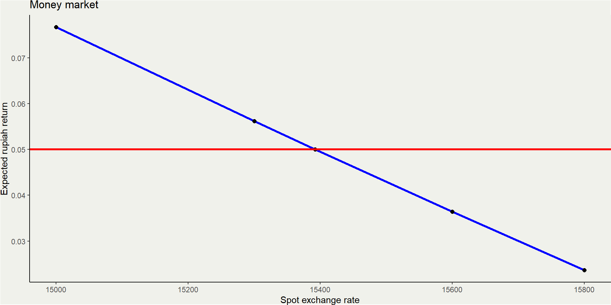
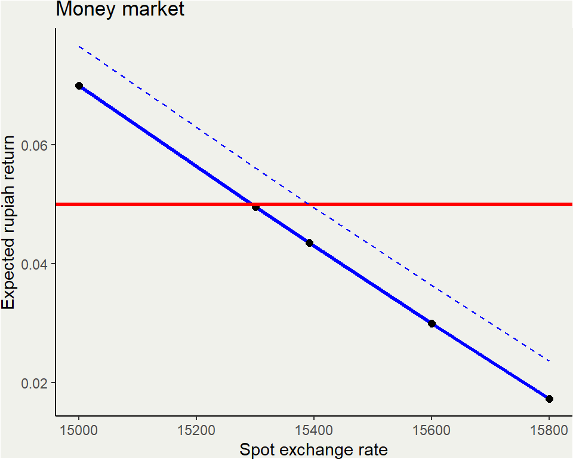
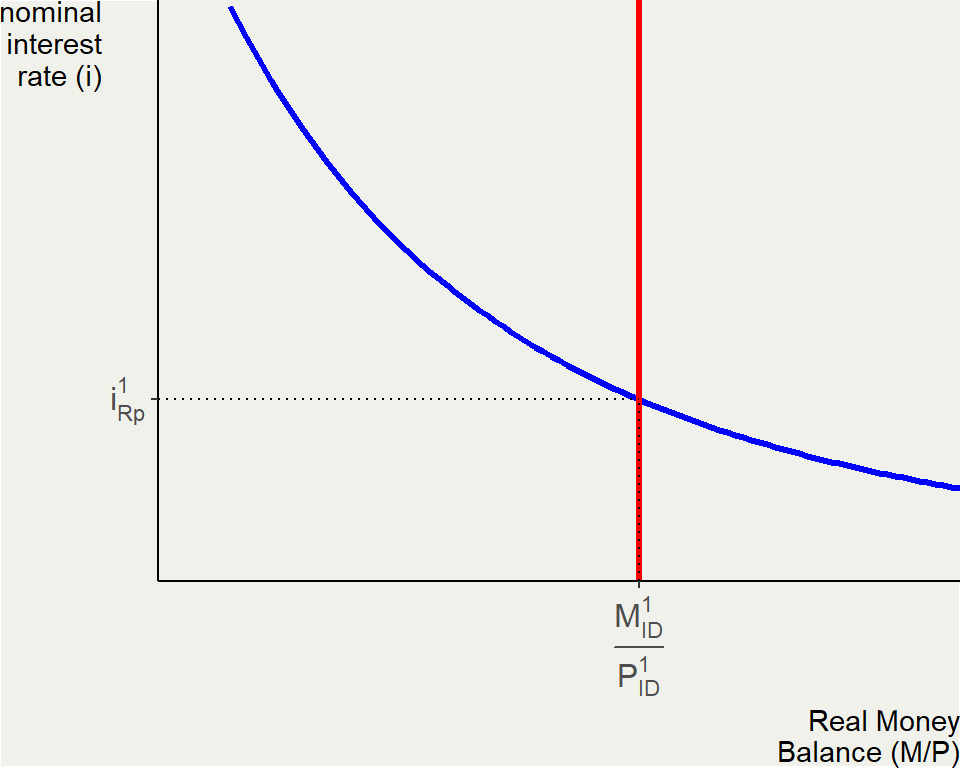
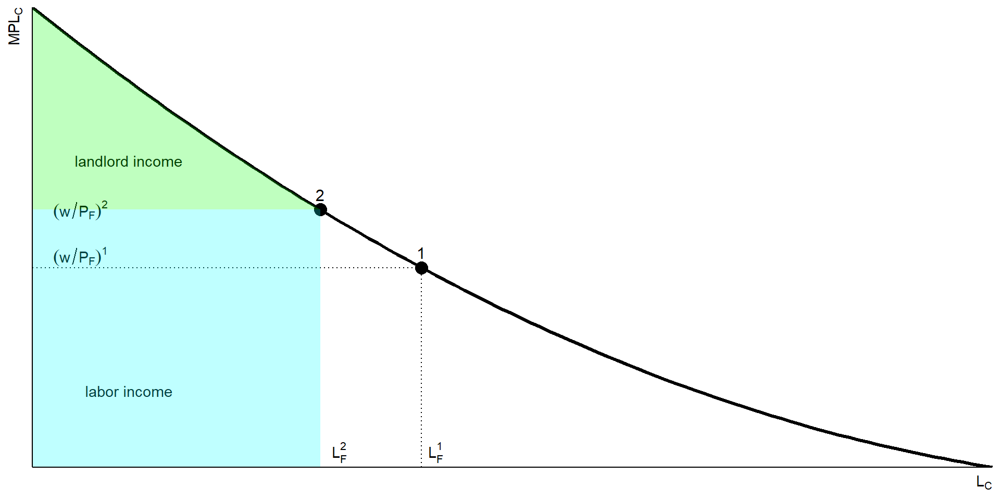
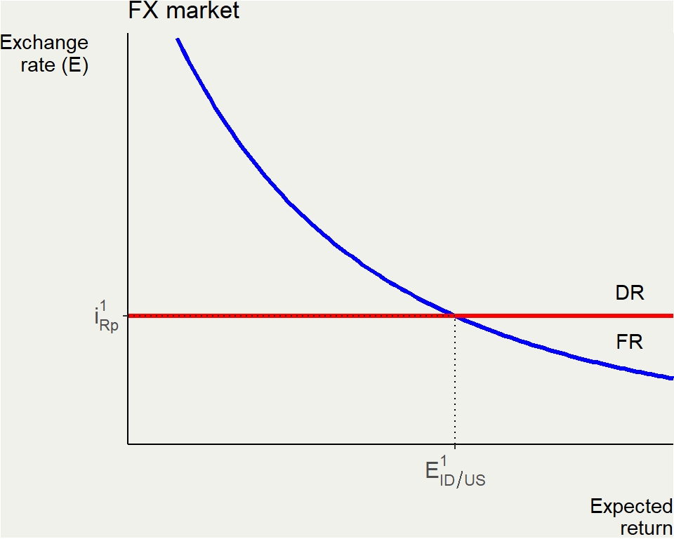

| iRp | iD | spot | e | ee | fore |
|---|---|---|---|---|---|
| 0.05 | 0.03 | 15000 | 15700 | 0.0466667 | 0.0766667 |
| 0.05 | 0.03 | 15300 | 15700 | 0.0261438 | 0.0561438 |
| 0.05 | 0.03 | 15392 | 15700 | 0.0200104 | 0.0500104 |
| 0.05 | 0.03 | 15600 | 15700 | 0.0064103 | 0.0364103 |
| 0.05 | 0.03 | 15800 | 15700 | -0.0063291 | 0.0236709 |
Exchange rate II: the asset approach in the short run
ECES905205 pertemuan 4
I Made Krisna Gupta
2024-09-12
Overview
How the arbitrage in the short-run plays out the dynamics of exchange rate?
How do money market and central bank policy choices determines interest rate?
What can the theory of exchange rates tell us about the difference between floating and fixed XR?
Intro
Deviations from purchasing power parity (PPP) occur in the short run: The same basket of goods generally does not cost the same everywhere at all times.
Short-run failures of the monetary approach led economists to develop an alternative theory to explain exchange rates in the short run: the asset approach to exchange rates.
It is called the asset approach because it is based on the idea that currencies are assets (i.e., stores of value).
The price of the asset in this case is the spot exchange rate, the price of one unit of foreign exchange.
Risky arbitrage
- The Uncovered Interest Parity (UIP) equation is the fundamental equation of the asset approach to exchange rates.
\[\begin{equation} i_{Rp}=i_\$+\frac{E^e_{Rp/\$}-E_{Rp/\$}}{E_{Rp/\$}} \end{equation}\]
the left-hand side is the rupiah return on rupiah asset while the right-hand side is the expected rupiah return on dollar asset.
Example
where ee is the expected depreciation of rupiah while fore is the expected rupiah return on dollar asset. Any spot higher than 15392 will create an opportunity to hold dollar asset, while the opposite is true for spot lower than 15392.
Money market
Blue line shows the rupiah return on dollar asset while the red line is the rupiah return on rupiah asset. Intersection is the equilibrium. Any point above red line is a case for holding dollar asset.
FX market movement
Using framework above, lets see what happens under these following scenarios:
A higher domestic interest rate of 7%
A lower foreign rate of 1%
A lower expected future exchange rate \(E^e_{Rp/\$}=15600\) which is an appreciation.
Case 1
An increase in domestic interest rate rises our red line. When interest rate goes up, it is now better to hold Indonesian asset. Rupiah demand went up which means an appreciation of the local currency against the dollar, up until the UIP holds.
Case 2

Under the second case, decrease in foreign interest rate leads to changes in the right-hand side equation (rupiah return in dollar asset) which affects the blue line. Decrease in foreign interest rate decreases the rupiah return in dollar asset. The blue line shifts downward, and equilibrium shifts to lower E which means an appreciation to IDR.
Case 3

When expectation of the future rate is a lower spot rate (an appreciation of IDR), it affects the return in dollar asset. The blue line shifts downward, leading to more opportunity to hold rupiah asset. equilibrium spot rate is shifting down, leading to an appreciation of IDR.
Short run equilibrium
In the short run, the price level is sticky, it is predetermined or known variable fixed at \(P=\bar{P}\)
In the short run, the nominal interest rate \(i\) is fully flexible and adjusts to bring the money market to equilibrium.
Sticky prices assumption, also called nominal rigidity, is very common in the study of macroeconomics in the short run.
Short run equilibrium
The expressions for money market equilibrium in two countries are as follows:
\[\begin{equation} \frac{M_{ID}}{\bar{P}_{ID}}=L(i_{Rp}) \times Y_{ID} \\ \frac{M_{US}}{\bar{P}_{US}}=L(i_{\$}) \times Y_{US} \end{equation}\]
Remember, money supply is controlled by the central bank.
Short run equilibrium

The mney supply curve (red line) is vertical because it does not depends on domestic interest rate. Money demand curve (blue line) is downward sloping amid interest rate increase leads to lower money demand.
The money market equilibrium is at \(i^1_{Rp}\) because it is where demand equals supply.
Short run equilibrium
Increase in money supply
With a fixed price level \(P_{ID}^1\), an increase in nominal money supply from \(M^1_{ID}\) to \(M^2_{ID}\) will increase real money supply from \(\frac{M^1_{ID}}{P_{ID}^1}\) to \(\frac{M^2_{ID}}{P_{ID}^1}\). If nothing else happens on the demand curve, then the equilibrium interest rate is going down.
Short run equilibrium
Increase in money demand
Suppose real income \(Y\) in Indonesia goes up, then \(\frac{M^d}{P}\) goes up, causing demand curve shifts to the right. If money supply stays the same, then the higher demand for money will rise interest rate in the equilibrium.
Learning from US
Can Central Banks Always Control the Interest Rate? A Lesson from the Crisis of 2008–2009
In the United States, the Federal Reserve sets as its policy rate the interest rate that it charges banks for overnight loans.
In normal times, changes in this cost of short-term funds for the banks are usually passed through into the market rates the banks charge to borrowers as well as on interbank loans between the banks themselves.
This process is one of the most basic elements in the so-called transmission mechanism through which the effects of monetary policy are eventually felt in the real economy.
Learning from US
In the recent crisis, although the Fed brought its policy rate all the way down from 5.25% to 0% in 2007 and 2008, there was no similar decrease in market rates.
A second problem arose once policy rates hit the zero lower bound (ZLB).
At the ZLB, the central banks’ capacity to lower interest rate further was exhausted. However, many central banks wanted to keep applying downward pressure to market rates to calm financial markets.
The Fed’s response was a policy of quantitative easing.
Learning from US
The Fed engaged in a number of extraordinary policy actions to push more money out more quickly:
It expanded the range of credit securities it would accept as collateral to include lower-grade, private-sector bonds.
It expanded the range of securities that it would buy outright to include private-sector credit instruments such as commercial papers and mortgage-backed securities.
It expanded the range of counterparties from which it would buy securities to include some nonbank institutions such as primary dealers and money market funds.
Learning from US

A broken transmission: The Fed’s extraordinary interventions did little to change private credit market interest rates in 2008–2009.
What about BI?
Monetary model LR vs SR
Suppose the home central bank that previously kept money supply constant now switches to an expansionary policy, allowing the money supply to grow at a rate of 5%.
If this expansion is expected to be permanent, the predictions of the long-run monetary approach and Fisher effect are clear. The Home interest rate rises in the long run.
If this expansion is expected to be temporary, all else equal, the immediate short-run effect in the asset approach is an excess supply of real money balances. The home interest rate will then fall in the short run.
It is important to grasp the difference between these two forces.
Asset approach

We have the interest rate equilibrium from the domestic money demand curve and money supply.

In the rupiah-dollar FX market, the spot rate \(E^1\) is determined by foreign expected return (FR) and domestic expected return (DR) amid arbitrage.
Asset approach
Capital mobility is crucial. Remember that our assumption that DR equals FR depends on capital mobility. If capital controls are imposed, there is no arbitrage, and no reason DR has to equal FR.
With this graphical apparatus in place, it is relatively straightforward to solve for the exchange rate given all the known (exogenous) variables we have specified previously.
SR Asset approach
When real money supply rises, it drives interest rate lower, just like our previous analysis.
In the rupiah-dollar FX market, the reduction of indonesian interest rate causes Domestic rate to fall, leading to a depreciation of IDR (E \(\uparrow\)).
Asset approach
Suppose there is nothing happen in Indonesia, but there is a large quantitative easing in the US, causing foreign real money supply to rise.
The foreign money supply rise reduces interest rate in the US, which in turn reduces its return to dollar asset. Arbitrage forces rupiah to appreciate (E \(\downarrow\)).
evidence
lending is Indonesian lending rate while usl is the US’ prime lending rate. xr is exchange rate. While Indonesian rupiah moves quite liberally,
the reduction of difference between Indonesian vs USian rate in 2023-ish seems to correlate with rupiah’s depreciation. Try do this graph in 2008-2015 period.
Complete theory of XR
The asset approach: short-run money market equilibrium (the first 2 eq) and UIP.
\[\begin{align*} \bar{P}_ID=\frac{M_{ID}}{L_{ID}(i_{Rp})Y_{ID}} \\ \bar{P}_US=\frac{M_{US}}{L_{US}(i_{\$})Y_{US}} \\ i_{Rp}=i_{\$}+\frac{E^e_{Rp/\$}-E_{Rp/\$}}{E_{Rp/\$}} \end{align*}\]
Complete theory of XR
The long run monetary approach:
\[\begin{align*} P_ID=\frac{M^e_{ID}}{L_{ID}(i_{Rp}^e)Y_{ID}^e} \\ P_US=\frac{M^e_{US}}{L_{US}(i_{\$}^e)Y_{US}^e} \\ E^e_{Rp/\$}=\frac{P_{ID}^e}{P_{US}^e} \end{align*}\]
Combining the two approach, we see how two key mechanisms of expectations and arbitrage determine exchange rate in both the short run and long run.
Complete theory of XR
wew
wewew
wewew
wewew
uwuwuw
Fixed exchange rate
Here we focus on the case of a fixed rate regime without controls so that capital is mobile (no capital controls) and arbitrage is free to operate in the foreign exchange market.
Central banks buy and sell foreign currency at a fixed price, thus holding the market exchange rate at a fixed level \(\bar{E}\).
We examine the implications of Denmark’s decision to peg its currency, the krone, to the euro at a fixed rate: \(\bar{E}_{DKr/€}\)
The foreign country remains the Eurozone, and the home country is now Denmark.
Fixed exchange rate
In the long run, fixing the exchange rate is one kind of nominal anchor. Even if it allowed the krone to float but had some other nominal anchor, Denmark’s monetary policy would still be constrained in the long run by its chosen nominal target.
What we now also show is that a country with a fixed exchange rate faces monetary policy constraints not just in the long run but also in the short run.
Fixed exchange rate
The Danish central bank must set its interest rate equal to \(i_{€}\), the rate set by the European Central Bank (ECB):
\[ i_{DKr}=i_{€}+\frac{E^e_{DKr/€}-E_{DKr/€}}{E_{DKr/€}}=i_{€} \]
since no appreciation/depreciation is allowed. It also means Denmark has lost control of its interest rate:
\[ M_{DEN}=\bar{P}L_{DEN}(i_{DKr})Y_{DEN}=\bar{P}L_{DEN}(i_{€})Y_{DEN} \]
Short run theory
Under a float:
The home monetary authorities pick the money supply \(M\).
In the short run, the choice of \(M\) determines the interest rate \(i\) in the money market; in turn, via UIP, the level of \(i\) determines the exchange rate \(E\).
The money supply is an input in the model (an exogenous variable), and the exchange rate is an output of the model (an endogenous variable).
Short run theory
Under a fix, the opposite is true:
Home monetary authorities pick the fixed level of the exchange rate \(E\).
In the short run, a fixed \(E\) pins down the home interest rate \(i\) via UIP (\(i = i^*\), the foreign interest rate); in turn, this \(i\) determines the money supply \(M\) necessary to meet money demand.
The exchange rate is an input in the model (an exogenous variable), and the money supply is an output of the model (an endogenous variable).
Short run theory
Fixed XR in LR
- The price level in Denmark is determined by PPP. But if the exchange rate is pegged, we can write long-run PPP for Denmark as:
\[ P_{DEN}=\bar{E}_{DKr/€}P_{EUR} \]
With the long-run nominal interest and price level outside of Danish control, monetary policy autonomy is impossible.
We just substitute \(i_{DKr}=i_{€}\) and \(P_{DEN}=\bar{E}_{DKr/€}P_{EUR}\) into Denmark’s long-run money market equilibrium condition to get:
\[ M_{DEN}=P_{DEN}L_{DEN}(i_{DKr})Y_{DEN}=\bar{E}_{DKr/€}P_{EUR}L_{DEN}(i_{€})Y_{DEN} \]
Fixed XR in LR
Under a float:
The home monetary authorities pick the money supply \(M\).
In the long run, the growth rate of M determines the interest rate \(i\) via the Fisher effect and also the price level \(P\); in turn, via PPP, the level of \(P\) determines the exchange rate \(E\).
The money supply is an input in the model (an exogenous variable), and the exchange rate is an output of the model (an endogenous variable).
Fixed XR in LR
Under a fix:
Home monetary authorities pick the exchange rate \(E\).
In the long run, the choice of \(E\) determines the price level \(P\) via PPP, and also the interest rate \(i\) via UIP; these, in turn, determine the necessary level of the money supply \(M\).
The exchange rate is an input in the model (an exogenous variable), and the money supply is an output of the model (an endogenous variable).
The trilemma
\[\frac{E^e_{DKr/€}-E_{DKr/€}}{E_{DKr/€}}=0\]
\[i_{DKr}=i_{€}+\frac{E^e_{DKr/€}-E_{DKr/€}}{E_{DKr/€}}\]
\[i_{DKr} \neq i_{€}\]
Fixed exchange rate. this is desired to promote stability in trade and investment. This represented by zero expected depreciation
International capital mobility, desired as a means to promote integration, efficiency and risk sharing. Represented by UIP
Monetary policy autonomy, desired to manage home business cycle. Represented by the ability to set interest rate independently